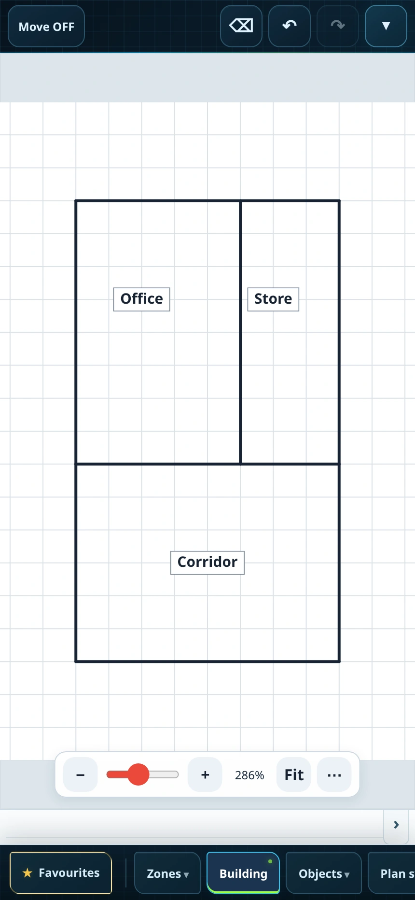
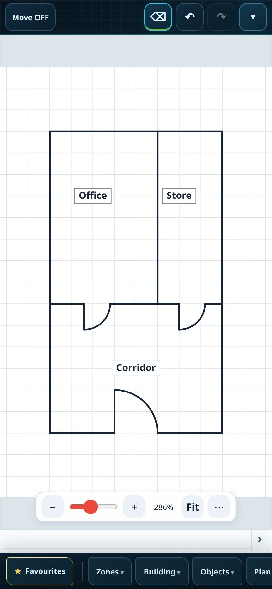
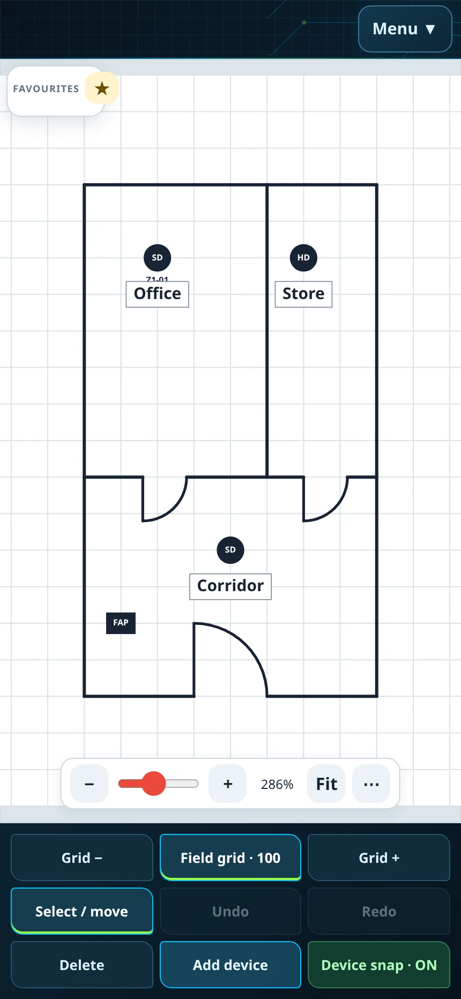
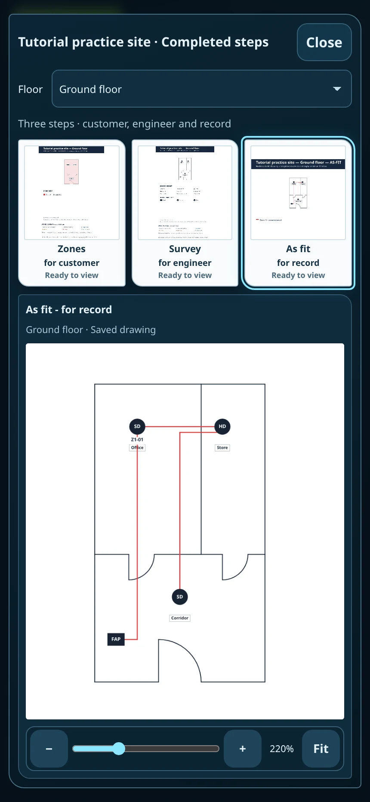

1 / GET STARTED
Create a practice site
For this walkthrough, make a small Fire project called Tutorial practice site. We will draw an Office, a Store and a Corridor on the ground floor.
- Open Zone Sketch. Let the opening animation finish, or double-tap it to skip.
- On Home, tap Make a new plan.
- Type Tutorial practice site into the project/site name box.
- Choose Fire, then leave Fresh install selected.
- Tap the green Create button for that system. Wait for the drawing workspace to open.
You should see: an empty drawing area, the current floor, and the drawing controls. Your site also gets its own card on Home.
Use Additional work instead when you need to extend an existing Fire circuit from an existing device or cable joint. That workflow has its own walkthrough below.
 Tap to enlarge
Tap to enlargeThe App Hub links to a separate unstable browser build. Its drawing controls match these examples, but its warning card may cover part of the screen until you close it. Use a practice site and export backups of any work you want to keep.
2 / GET COMFORTABLE
Find your way around
On a phone, some controls are folded away to leave more room for the drawing. Tap Menu or the small arrow at the top to open them. Close it again when you need more canvas space.
| Control | What it is for |
|---|---|
| Building | Opens the Building layout tools: walls, room shapes, labels and wall editing. In Additional work, the button is called Building layout. |
| Move ON | Lets you move your view of the plan without drawing. Drag to pan; pinch with two fingers to zoom. |
| Fit | Brings the whole plan back into view when you are zoomed in or have moved it off screen. |
| Survey mode | Switches to placing and documenting devices. The building stays underneath. |
| As-fit mode | Opens the Fire circuit builder and saved Fire drawing. Additional Fire calls this Circuit builder. For other systems' records, use Project → Maps & As-Fits. |
| Project | Home/Projects, imported plans, drawing details, editable backups and other project actions. |
| Undo / Redo | Undo reverses your last edit. Redo puts an undone edit back. |
 Tap to enlarge
Tap to enlargeMove ON moves your view. To move a wall, label or device, use the selection tool instead. In Survey the button is explicitly called Select / move. Choosing a drawing tool leaves Move mode so you can draw.
In the layout workspace, turn Move ON before pinching to zoom. In Survey, two-finger navigation works directly. On a computer, the zoom controls are an easy alternative.
3 / DRAW THE BUILDING
Quick rooms, walls and outlines
Room shapes save you drawing every wall separately. Open Building; the popup heading says Building layout.
Make your first rectangular room
- Choose Box in the Building layout popup.
- Press where one corner should be.
- Keep holding and drag diagonally to the opposite corner.
- Release when the room is the size you want.
- Repeat for another room, or use Wall to divide a bigger box into smaller rooms.
You should see: wall lines around the room. This is building geometry; it does not assign a Fire zone or add a room name.
Draw a single wall
Choose Wall, press at the wall's start, drag to its end and release. Draw the next wall as another drag. Use grid snapping to keep joins tidy, and zoom in before making a small adjustment.
 Tap to enlarge
Tap to enlarge| Tool | How to use it |
|---|---|
| Box | Drag between opposite corners for a rectangular enclosure. |
| Circular room | Drag out the area for a circular or oval room. |
| Corridor | Drag out a rectangular corridor. This tool also adds a Corridor label. |
| L-shaped room | Drag out the overall area to create an L-shaped outline. Select it afterwards to use Rotate 90° or Mirror ↔. |
| Outline | Tap at least three corners of an irregular room, then tap Finish outline. The last wall joins back to the first corner. |
Move a room or a group of objects
- Choose Select / Move and press an actual wall or object, rather than the empty centre of a room. Drag to move it.
- To collect several separate objects, choose Box select and drag a selection rectangle from empty space across them.
- Check the selected-item count, then choose Make group (or Group along the bottom).
- Use Select / Move to move the group together. Blue corner handles resize a selection; Ungroup separates it again.
- Use Duplicate for another copy, then drag the selected copy into place. Rotate 90° and Mirror ↔ help fit it to the layout.
Draw one outer Box, then add two internal walls to make an Office, Store and Corridor. If a line goes wrong, tap Undo and draw it again. Do not worry about exact dimensions for this practice drawing.
Two different Box tools: Building → Box draws building walls. Zones → Box draws a coloured zone area; the menu shows the selected zone number once a zone is chosen. If you get a coloured block when you expected walls, Undo, then open Building.
4 / MAKE IT READABLE
Name your rooms
- Open Building and find Quick room names.
- Tap Office, then tap inside the office on the plan.
- Choose Store and tap in the store.
- Choose Corridor and tap inside the corridor if it does not already have a label.
- For another name, choose Custom…, enter the text and place it on the plan.
The chosen label stays active. You can tap several rooms to repeat it. Change tools when you have finished, or your next tap will add another label.
Make labels smaller or larger
Use Label size in the same popup. The 25%, 50% and 100% buttons are quick starting points. This changes the size of new labels.
To resize labels already on this floor, use Apply size to this floor. To change just one, select it and open Properties → Size. Undo can reverse a floor-wide resize.
You should see: clear room names inside the walls, without text covering doors or devices.


Tap to enlarge5 / ADD THE DETAILS
Doors, openings and existing plans
Place a door
- Open the Objects menu.
- Choose Door, Double door, Window or Roller shutter.
- Press on an editable wall and drag along it across the width of the opening. The orange preview shows its position. For Door or Double door, keep your finger on the intended swing side, then release.
- For Door or Double door, check the hinge and swing direction. If they are wrong, Undo and draw the door again from the correct side.
Zoom in first if the door lands on a nearby wall instead of the one you intended. If the app says Opening too small, drag farther along the wall. A door needs an editable wall: trace an imported image with Wall first. Pen strokes do not work as door-snap walls.
For a plain gap without a door, leave a gap between two wall runs. On an existing wall, use Building → Split wall at each edge and delete the middle section. Deleting an existing door removes the door symbol but leaves the opening; Undo restores the door.
Start from an existing plan
Replacing a floor's plan clears its drawing objects and labels after confirmation. If you have already drawn the practice rooms, use another empty floor or a separate practice project for this exercise. Back up work you want to keep first.
- Open the top Menu, then Project → Import plan.
- Choose a supported image or PDF file from your device.
- For a PDF, follow the page selection/import prompts.
- Check the plan orientation and floor before placing your drawing objects over it.
Use Picture opacity to fade a plan while tracing. Clean up provides brightness, contrast, B&W and a Plan preset. For a photographed drawing, use Perspective, place the four handles on its corners and tap Apply before tracing.
The imported picture is a background. Its printed walls and text do not become individually editable objects. Use the building tools to draw editable details over it.
 Tap to enlarge
Tap to enlargeIt clears the current floor's drawing. Use Delete or Undo for one mistake. To hide an imported background while keeping your drawing objects, use Hide picture instead.
More than one floor
Expand Menu, tap Floor · Ground floor (or the current floor name), then + Add floor. Choose a preset or Custom name and tap Add floor. Use the same menu to switch floors; the active one has a tick. Copy current building layout copies editable building objects and room labels onto a blank background. It does not copy the imported picture, zones or devices. Each floor keeps its own layout, devices and circuits. The finished-drawings viewer also has a floor selector, so always check that you are viewing the intended floor.
6 / FIX A MISTAKE
Delete without starting again
There are three useful ways to delete: tap one object, sweep across several, or delete an existing selection. Start with the practice site so you can see what each one does.
Delete one item
- Zoom in until you can clearly see the item you want to remove.
- Tap Delete. In the layout toolbar this is the delete icon ⌫; in Survey it says Delete.
- Tap the object itself: the wall line, label or device symbol.
- The item disappears when you release. Tap Undo immediately if it was the wrong one.
- Select another tool when you have finished deleting. Delete stays active until you leave it.
Swipe-delete several items
- Choose Delete.
- Press on the drawing and keep your finger down.
- Drag across the objects you want to remove. The affected objects are highlighted red as a preview.
- Release your finger to delete those objects.
- Tap Undo once to restore that whole swipe. Redo reapplies it.
 Tap to enlarge
Tap to enlarge

Tap to enlargeCrossing a wall with Delete can remove that wall object. It does not rub a small hole in the line like a pencil eraser. Use Objects → Door for a doorway, or split the wall at each edge of a plain gap and delete only the middle section. A sweep deletes what its path touches, not everything inside an imaginary rectangle.
Delete a selected object
Select the object first, then use Delete selected in the selection controls. This is useful when you want to confirm what you have selected before removing it.
Undo history is limited and resets when projects are opened or switched. Making a new edit after Undo clears the Redo path. Undo is best for immediate mistakes; an editable backup is what you keep for later.
Why might Delete do nothing?
- You are in Survey: its Delete tool removes survey items, while protecting the building underneath. Return to the layout workspace to edit a wall.
- The layer is locked or hidden: check the Locks and Layers controls in the layout workspace.
- It is part of an imported picture: Delete cannot remove individual lines printed inside the background image.
- You touched empty space: zoom in and touch the visible line or symbol.
Add an extra practice wall. Delete it with one tap, Undo, then swipe across it and release. Undo again. You have now tried both kinds of deletion without losing your drawing.
7 / FRESH FIRE PROJECTS
Add a zone to the building
A room describes the building. A zone describes a Fire alarm area. Drawing a room does not automatically create a zone.
- Open Zones and tap Create zone (or + Zone in the Zones panel).
- Enter a zone number, an area description and a colour, then save it.
- Make sure that zone is selected. The menu now shows its number, such as Zone 1.
- Open that zone menu, choose Box and drag an area over the rooms that belong to it. Use Outline for a less regular area, or Fill area for a suitable enclosed region.
- Check that the colour covers the intended area and that the zone appears in the zone list/key.
You should see: your building with a zone area over it. The number and description belong in the key rather than covering the room names.
Give the practice building one zone before you add devices. This makes the first conventional circuit easier to follow. Additional Fire work deliberately has no zone controls; use its endpoint workflow instead.
 Tap to enlarge
Tap to enlarge8 / SURVEY
Add devices to your rooms
- Open the top controls and tap Survey mode. In Additional work, this stage is called Add devices.
- Tap Add device to open the device library.
- Choose a device, such as Smoke, Heat or MCP.
- Tap on the plan where the device belongs.
- Tap again to place another of the same type, or reopen Add device and choose a different device.
- When you are finished placing, tap Select / move so the next touch does not add another device.
For the practice site, put a Smoke detector in Office, another in Corridor, and a Heat detector in Store. Also choose Fire panel and place it near the entrance for the Fresh install circuit exercise. You can place an MCP by a suitable doorway when your own survey requires it.
You should see: devices on top of the building. Fire Survey intentionally leaves cable routes out of this view.
You may still be in Zone plan mode. Its plan-symbol list is limited. Switch to Survey mode to use the full device library for the chosen system.
 Tap to enlarge
Tap to enlargeAdd several devices at once
- Open Add device → Add multiple devices.
- Enter whole-number quantities for the device types you need.
- Tap Add devices. The batch appears with spacing around the current view.
- Select / move activates. Drag each device to its actual location.
A batch is a quick starting arrangement. It does not know the real room positions or mark equipment as checked. The devices remain individually editable, and Undo can remove the initial batch in one step.
Save a favourite
Choose the device type, colour and size you use often, then use Save current to side. The favourite remembers that combination so you can select it quickly on the next room.
Check your quantities: Devices · N shows current-floor and whole-building quantities. Compare these with the devices you intended to place.


Tap to enlarge9 / PUT IT IN THE RIGHT PLACE
Move, label and edit a device
Move it
- Tap Select / move.
- Press the device symbol and drag it to its new position.
- Release and check where it snapped. Zoom in first when devices are close together.
Give it a useful reference
- Select the device.
- Open Properties in the selection controls.
- Enter its Device reference, for example Z1-01.
- Check the other available fields, size and colour, then tap Save.
Do not assume placement numbers devices for you. Enter or check the reference you need. A duplicated device can carry copied information, so check its reference before using it as another device.
Too big, too small, or facing the wrong way?
Use the selected object's Properties and rotation controls. The size chosen in the device library affects new placements; existing symbols keep their own size until you edit them.
 Tap to enlarge
Tap to enlargeField grid shows or hides the grid. Use Select / move to reposition a device. Device grid snapping stays on, and changing the Survey grid spacing can realign existing devices. Pick a sensible grid before doing detailed placement, and check the result if you change it later.
To remove an incorrectly placed device, use Survey → Delete, tap it and release. Undo restores it. You can also use the swipe-delete method described above.
10 / OTHER SYSTEMS
CCTV, Intruder and Access Control
The building and basic survey gestures stay familiar, but the device library changes with the project system. Choose Security in the New project dialog for Intruder work.
| System | What to do |
|---|---|
| CCTV | Choose a camera. Press at its position, drag to aim it, then release. Check its direction before carrying on. Use its Properties for the available camera settings. |
| Intruder / Security | Wall-mounted equipment snaps to nearby wall sides. For directional PIR/DT detectors, drag to set the direction. Place door contacts near a drawn door so they can snap to it. The 360 detector is the exception: it stays freely placed rather than snapping to a wall. |
| Access Control | Draw the door first, then use the Access tools and device properties to document the door equipment and connections. Check door associations rather than assuming nearby symbols are automatically connected. |
These systems have their own connection and record tools. The Fire Zone Challenge described next is for Fire projects; you do not need to create Fire zones for a CCTV or Intruder drawing.
Copy layout is useful when the same building needs a separate CCTV or Intruder project. It gives you the building without copying the original system's devices.
11 / FRESH FIRE CIRCUITS
Connect the devices and make an As-fit
Finish the building and place the Survey devices first. For this exercise, place Fire panel in Survey mode near the entrance. It appears as FAP in the circuit builder.
Choose what you are building
- Open As-fit mode from the top controls.
- Check the selected floor.
- For a conventional zone, use Zone Challenge and choose its zone colour.
- For an addressable loop, choose Highlight a loop. Tap devices, or sweep across them, to highlight the devices for that loop.
- When the intended devices are highlighted, choose Build highlighted loop.
Only highlight the devices that belong in the circuit you are drawing. If a device is missing, go back to the plan and check its floor, Survey placement and zone where applicable.
 Tap to enlarge
Tap to enlargeDraw the route
- Start from the highlighted starting point at the panel.
- Press and drag the cable path towards the next intended device. Follow the builder's highlighted route tip and guidance.
- Pass through the devices in the order you need. Check the connected/remaining progress as you go.
- For an addressable loop, finish by returning to the panel. A conventional zone completes after its required devices have been connected; it does not need an invented return to the panel.
- When completion is shown, tap Keep circuit ✓.
- Build any other required circuits, then use Complete circuits → As-Fit to produce the drawing.
Use Undo leg to back up a routing step. Reset circuit starts that run again. Use the route-edit pencil for an existing route and confirm the edit with Done. Read the builder's progress before considering the circuit finished.
 Tap to enlarge
Tap to enlargeIn conventional or Additional work routing, use Bridge ON for an intentional permitted crossover. The route editor also has a Bridge control. Ordinary crossings do not connect cables together. The clean As-fit output leaves temporary bridge editing marks and selection handles out of the finished drawing.
12 / EXTEND AN EXISTING FIRE CIRCUIT
Additional work: start and return points
Choose Fire → Additional work when you create the project. Its stages are Building layout → Add devices → Circuit builder. You can document the affected area without creating zones or placing a new Fire panel.
- Building layout: draw or import the building. If useful, choose Existing cable and drag each straight reference section. Start the next section at its end to make a bend.
- Add devices: place the existing connection devices and the devices you are adding. This is the normal Survey toolset. If needed, use the normal record controls to mark existing equipment Surveyed existing. Cable reference lines are intentionally hidden in this view.
- Circuit builder: choose Choose connection points. Under Choose last device / cable joint location, tap your starting point.
- Tap the return point. It can be another existing device, a point on a cable, or a joint location you mark on blank plan space.
- To return to the same place, tap Start again. These are two ordinary successive taps; no fast double-click or extra confirmation button is needed.
- In Highlight additional devices, select at least one added device, then tap Build additional section. Start/Return devices are not selected again as added devices. Build the circuit through the highlighted devices and finish at Return.
You should see: Start and Return markers, followed by device selection and the normal routing flow. Selecting the two endpoints only sets up the circuit; it does not draw the cable or complete the work.
Return to a different point on an existing cable
- Connect all selected devices first.
- Draw your return route right up to the intended cable location.
- Press and hold that contact for five full seconds. Watch the hold-progress indicator.
- After the full hold, the app creates an explicit cable joint there and replaces your originally chosen Return.
Releasing early, moving away or starting a pan/pinch cancels the hold. Use Change connection points to correct the setup before routing. If you leave an unfinished added route, its tail is saved; press its green tip to resume. A normal tap or ordinary crossing does not make a joint. The route must actually reach the cable; holding somewhere else cannot create a shortcut.
Go out through the selected new devices and back to Start. Choosing Start and Return at the same location does not create a finished zero-length circuit.
13 / CHECK THE RESULT
View and export your finished drawings
- Return to Home / Projects.
- Find the site card and tap Show completed steps.
- Choose the correct Floor.
- Tap one of the three paper cards to view the available drawing.
- Use the zoom bar to inspect details. 100% fits the paper; higher values enlarge it up to 500%. Scroll around the enlarged drawing, or tap Fit to see it all again.
- Zones — for customer: the zone plan. Additional work uses Building layout.
- Survey — for engineer: the building and surveyed devices. Additional work uses Add devices.
- As fit — for record: the completed Fire output, or an issued record for the other systems.
The button is available on every project card. A step that has no finished drawing data says Not completed; it does not make a blank drawing into a finished one. For Fresh Fire, the customer card needs zone areas, not only walls.


Tap to enlargeExport the drawing you want to send
Open the relevant drawing mode and use its Export controls. Survey offers Current floor PNG and All floors PDF. The Fire As-fit viewer offers Export As-Fit PNG. Check the title, floor, device references and route before sharing the file.
A saved, valid Fire As-fit remains viewable when you reopen As-fit mode; you do not have to complete the circuits again just to see it. If a device or route changes afterwards, check and finish the affected circuit again.
Issue a record for CCTV, Intruder or Access Control
- Open Project → Maps & As-Fits and enter Engineer / issuer name.
- Select an item and choose its actual record state, such as Surveyed existing, Proposed or Installed. Add an Item record note where needed, then Save item state.
- Use Verified As-Fit only after checking the item and its position/route onsite. The app asks for your name and the onsite-check confirmation; drawing a route does not perform that check.
- For the finished issue, enter Revision and Revision / issue note, then choose Issue As-Fit snapshot.
- Use Issued PDF, Issued CSV or Issued JSON to export that saved issue. The record card in Show completed steps uses the latest issued snapshot for the selected floor.
An issue preserves the record as it stood. It does not automatically mark unverified items as checked. Later drawing changes need another review.
Finishing a cable route does not automatically mark every item as verified. In CCTV, Intruder and Access Control, the record card uses the latest issued As-fit for that floor. Use the system's record controls to review and issue the record when appropriate.
14 / KEEP YOUR WORK
Save, back up and copy a site
Autosave keeps work on the current device. Wait for the status to change from Saving… to Saved locally before leaving. An editable backup is the file you keep separately or transfer to another device. A picture of the drawing is not an editable backup.
Save an editable backup
- In the workspace, choose Project → Save editable backup. Alternatively, on the Home project card choose Export.
- Save the .zonesketch.json file using your device's Save/Share options.
- Keep it somewhere you can find again, such as Files or your chosen backup location.
Open the backup again
- On Home, tap Import backup, or use Project → Open backup.
- Select the saved .zonesketch.json file.
- Import creates a new working project. Check the site name, floor list and drawing before continuing.
Backups keep the editable project, including its floors, devices, photos and circuits. Export one before a major change, moving devices or using an experimental update.
 Tap to enlarge
Tap to enlargeDuplicate, or copy just the building?
- Duplicate makes a separate full copy of the project. Use it for a new revision or an experiment you want to keep separate.
- Copy layout… opens Copy site layout. Give the copy a name and choose a destination system, such as CCTV or Security. It copies the building, floors, imported plans and room labels, then starts with an empty device/circuit record for the new system.
Save an editable backup first. Opening the app on another phone or in another browser does not automatically bring across the projects stored on this device.
Export Tutorial practice site, return Home, and make sure its card is visible. You now have a drawing you can reopen and a separate editable backup.
15 / WHEN SOMETHING LOOKS WRONG
Quick fixes
I cannot see Building, Project or Survey mode.
Expand the top Menu using its small arrow. Some drawing menus sit along the bottom on a phone. If you are in Survey or Circuit builder, use its back/mode control to return to layout tools.
Dragging moves the whole plan instead of drawing.
Move ON is for navigation. Choose the drawing tool again, such as Building → Wall or Box. To move a device rather than the view, use Select / move.
Every tap keeps adding the same label or device.
The last placement tool stays active. Choose Select / move, another tool, or Move ON when you are finished placing items. Undo removes an accidental extra placement.
I deleted too much.
Tap Undo immediately. A swipe-delete is one edit, so one Undo restores the whole swipe. If you want only a doorway in a wall, use Objects → Door instead of Delete.
I cannot erase a wall in Survey.
Survey protects the building underneath. Return to the layout workspace and check its Locks and Layers controls. If the wall is printed in an imported picture, it is not a separate editable wall.
My device has disappeared or seems off screen.
Tap Fit, check the current floor, and check that you are in the correct mode. A plan-only symbol and a Survey device are not the same thing. Check visible layers before adding a replacement.
I cannot see the cable while surveying.
Fire Survey/Add devices intentionally shows the building and equipment without cable routes. Open the circuit/As-fit view to inspect the cable. Additional work's Existing cable references are also hidden in Survey.
The circuit will not finish.
Read the remaining-device guidance. Check that the route has actually reached every required device. An addressable loop must return to FAP; an Additional work section must reach its selected Return. Choosing endpoints alone never completes a circuit.
A completed-step card is greyed out.
Check the selected floor and the step's label. Fresh Fire's customer card needs zone areas; the engineer card needs surveyed devices. The record card needs a valid completed Fire As-fit or an issued record for another system.
My saved sites are not on another phone.
Projects are stored locally. Export the editable backup on the original device, move the file to the new device and choose Import backup. Sending a PNG only sends a picture.
The free browser build shows a warning or looks slightly different.
It is the separate experimental build linked by the App Hub. Close its warning card to reveal covered controls, and back up projects before updates. These screenshots show the shared v0.64 controls; later builds may move or rename a control.
Still stuck? Use the App Hub feedback page. Include the system, floor, mode and the exact button you tapped. A screenshot of the control is more helpful than “it doesn't work”.